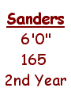
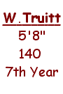
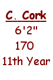
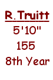
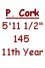
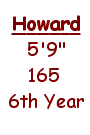
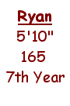
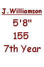

"The
Colonel" Ready for the Challenge
Quarterback
"The Colonel". He's already got
the big nickname, the commercial deals, the music video, not
to mention the big free-agent contract after he became a fan
favorite in Cork Bowl 10 as a rookie, but Steve Sanders is facing
a big challenge this year - quarterbacking a team to a Cork Bowl
victory. It's a mission that many have failed at, especially
first timers.
What some critics see as a major gamble and an attempt to bring in new
sponsors, nobody that was around training camp thinks it's a
gamble at all. "Sure he only threw two passes last year,
but anybody that saw those passes had to see the potential for
a huge game," commented the excited General Manager Patrick
Cork. "That's why he got the big money."
Sanders was 2-for-2 with a touchdown throwing
the ball last November, but he spent most of his time catching
15 passes for 3 touchdowns. "I think he was playing out
of position last year," remarked teammate Chris Cork. "He's
got a quarterback's mentality. He's a true leader, and it's hard
to lead a team when you're split out wide as a receiver. You're
gonna see something special this year from the Colonel."
All of his teammates have great confidence
in Sanders' ability to throw the ball. "He's awesome,"
added Ryan Tomlinson. "If you could see how quickly he got
on the same page with us during training camp you'd think the
same. This isn't an easy offense to learn, but it's almost like
he created it himself. I've never seen anything like that before."
Sanders will have his work cut out for
him. Sure he's got both Cork brothers as targets, but someone
else is going to have to step up and make plays. Is that going
to be Kevin Ryan or Ryan Tomlinson? Nobody seems to know and
there isn't much word out of camp as to who is performing better.
Of course Tomlinson says he will be that man, but they aren't
talking which has caused some to question: Will Sanders will
have enough confidence to look their way?
"Absolutely," replied a calm
and confident Sanders. "If they are wearing Ermine jerseys;
they will get the ball. Going into last year's game, I was all
rookie, greasy fingers and all. By the fourth quarter, however,
there were no rookies on the field. The off-season has been good.
I have shed the "freshman 15", studied game tape, and
worked out with my cousin Barry. The honeymoon is over, it's
time to play ball!"
Game Plan
- "I'm not looking for moral victories this year."
back to top
|
Willy
Truitt: The Little Man with the Big Arm
Quarterback
"Not one bit!" That was the answer
Willy Truitt gave to the question 5 years ago when asked if he
was concerned about playing quarterback in Cork Bowl with his
small stature. Sure Truitt isn't the prototypical quarterback,
but just look at the numbers. He's the all-time leader in completions
(182), attempts (309), touchdowns (73), and rushing touchdowns
(12). And he may have his most balanced and explosive receiving
corps this year. "It has been an incredible run these past
few years, but i'd be lying if I said that the goal fo r
us this year is anything less than a championship," commented
Truitt.
He doesn't need much help either. His passing
records are far and away tops in history. Last year Truitt was
44-71 with 16 touchdowns and only 2 interceptions. In fact, Truitt
has completed over 55% of his passes and has thrown just 12 interceptions
in 309 attempts (a miniscule 3.8%). He's looking to lead his
team to a 5th championship and a third straight. No other quarterback
has won more than two Cork Bowls. So how do you stop him? "You
don't," answered Truitt.
"I think the only chink in his armor
is when he is rushed," said retiree Kirby Newell. "When
teams blitz him, they usually have success - at least in disrupting
his rhythm - because he's not big enough to fight off the defenders."
However, rushing Truitt can pose more problems as well. He has
rushed for 12 touchdowns in the past five years, including a
record-setting seven scores in Cork Bowl 7.
"Just because you rush him doesn't
mean he's not going to hurt you," added Ryan Tomlinson.
"Last year he was rushed on half the plays and still threw
16 touchdowns."
Truitt will have a new group of receivers
this year including his brother Reggie. Greg Howard had a breakout
game last year and will need to step up and be a go-to receiver.
Josh Williamson and rookie Jeff Henney add depth to what looks
to be a quick-strike offensive attack. Although Truitt has only
16 tackles in his career, he has picked off 6 passes. "He's
not challenged a lot defensively, but when he is he can make
some big plays," added Tomlinson.
Game Plan - "Don't
throw rocks at the throne, do not bark up that tree, that tree
will fall on you."
back to top
|
Chris Cork:
The Ultimate Professional
Wide Receiver / Tight
End
The "King of the Red Zone" is
back for year number 11. As one of only two remaining original
Cork Bowlers, Cork has been the model of consistency and dependability.
He ranks third on the all-time receptions list with 82, and has
27 touchdowns. Not to be forgotten is his knack for the big play.
Cork has made some of the biggest game-changing plays on defense
over the years en route to his all-time record 11 interceptions.
"It's simple," remarked brother
Patrick.  "He's just got a nose for
the ball - both offensively and defensively. He can go 15 minutes
without making a catch and then all of a sudden he picks off
a pass and the game completely changes."
Cork owns one of the surest pair of hands
in the league and has mastered the art of the one-hand catch
and finds the endzone seemingly every drive. HIs long wing-span
helps to reach over defenders and also to knock down passes on
the other side of the ball. He's not the fastest or strongest
player on the field, but it's tough to find a more productive
player on either side of the ball.
Although Cork has put up big numbers in
his career, he has had a couple of tough games over the past
two seasons. After averaging 17 catches a game from '96-'98,
Cork had just 9 catches last year and 8 the year before. Is this
just a couple of down years or is the 26 year old on the downside
of a brilliant career?
"I'm just getting warmed up,"
calmly answered Cork. "Any avid Cork Bowl follower would
know that in Cork Bowl 9 I was very ill, and then last year was
the first year without Kirb. That's not easy to get used to.
But my team won both times. I've chosen to dominate this year
for Kirb. And don't worry, The Colonel will find me. I will
be open...I'm open right now."
Game Plan
- "I only know how to win."
back to top
|
Truitt's
Versatility Second to None
Wide Receiver / Backup
QB
Versatility. That's one of the many words
used to describe Reggie Truitt's Cork Bowl career that dates
back to Cork Bowl 2. In his 8th Cork Bowl, he "does it all,"
commented brother Willy. Truitt ranks second on the all-time
completions list with 135 including 47 touchdowns. He is sixth
in career receptions with 30, and has 10 touchdowns. His 60 tackles
rank him second all-time as well.
Obviously the numbers are impressive, but
they haven't led to many victories. Truitt has lost three straight
Cork Bowls and 4 of the last 5. Las t
year was a typical year as Truitt threw 6 TD's, caught seven
passes for two touchdowns, and had a game-high 14 tackles...and
one Cork Bowl defeat.
"He's always been a top-notch player,
but his team always seems to make a mistake late in the game
that costs them," remarked Hall of Famer Kirby Newell.
Truitt will likely not be sharing quarterback
duties this year so it will be interesting to see how he holds
up as a full-time receiver. With brother Willy under center,
there's little doubt who his prime target will be. Reggie will
also be responsible for guarding one of the Cork brothers in
pass defense. He'll need to contain one of them to take off some
of the pressure that Greg Howard and Josh Williamson will have
in guarding the other one.
If Truitt can hold up the entire game at
receiver, and play at the level he does when he rotates at quarterback,
he will be a tough matchup for the defenders. "I've had
more trouble guarding Reggie in the past than anyone else,"
commented Patrick Cork. "He's got great receiving instincts
and has more quicks than me. I'm hoping he'll wear down as the
game goes on, otherwise he could put up some big numbers, especially
with Willy throwing to him."
Game Plan
- "The losing streak ends this year!"
back to top
|
Patrick
Cork Looking for 4 in a Row
Wide Receiver
Patrick Cork made a decision five years
ago before the start of Cork Bowl 6 and has continued to use
it as motivation ever since. "I made my mind up that nobody
was going to stop me and I still think that today," Cork
said. The numbers seem to support this bold statement. Cork is
the all-time leader in receptions with 108 and has 36 touchdowns,
but really came into his own in 1996. Remarkable consistency
has followed. His reception totals over those five years (17,
15, 24, 14,18) and touchdowns (5, 5, 5, 6, 7) have helped lead
to three  MVP selections. Cork has won three
consecutive Cork Bowls and 5 of the last 6.
"Offensively I want the ball every
play," added Cork. "I'm not as fit as I used to be,
but I still thrive on the role of a possession receiver. I want
the ball. Anybody can score a few TD's in a game, but I want
to drive the team down the field."
Known for his soft hands and clutch 3rd
and 4th down catches, Cork thrives on making plays on defense.
He leads in tackles with 65, but is most proud of his 5 forced
fumbles and 5 fumble recoveries. "To make a tackle, that
means your guy probably caught the pass so I don't think that
stat is as nice as you media people like to think. And an interception
is usually a ball that was thrown poorly, as opposed to having
great coverage on the receiver. I love to force fumbles because
that can get inside a player's head. Interceptions are nice,
but when you strip the ball from someone - that's mental, and
I'm all about mind games."
Cork will be a primary target on offense
and hopes to be a security blanket to Sanders who can feel confident
looking to him if he gets in trouble. He may get some double
teams thrown his way, especially if Tomlinson and Kevin Ryan
struggle early in the game. Look for Cork to put up big numbers
again on offense, but he must play solid defense and make some
big plays to give his team a chance.
Game Plan -
"Win. That's why we play, right?"
back to top
|
Howard Ready to Join Cork Bowl Elite
Wide Receiver
He's been the brunt of many of the pregame
jokes over the past several years, but Greg Howard is not someone
to laugh at. "He was last year's MVP in my mind," said
color commentator Kirby Newell. "He was all over the place
on offense and defense and was the only reason his team was in
the game. Had his team finished off that comeback, he would have
been the reason."
Entering his 6th Cork Bowl, Howard has
improved each year and is ready to claim his spot among the Cork
Bowl greats. "I think I belong," remarked Howard. "I've
gotten better each year and if  you
look at my numbers, I've been a solid player every year since
my first game." In fact, Howard's improvements over the
years have placed him 4th on the all-time receiving list with
40 receptions, and he has a remarkable 22 touchdowns as well.
"When Greg catches a pass, it's usually for a score,"
stated Patrick Cork. "That's been the case ever since his
second game in Cork Bowl 7."
Last season Howard had a huge day finishing
with 12 catches and 7 touchdowns. Many of the catches and scores
took place in the later part of the game which is a testament
to Howard's mentality. "I think I'm in better shape than
anyone else," added Howard. "So it's not surprising
to me that I put up better numbers as the game goes on."
Defensively, Howard is no longer a liability
either. He finished last year's game with 9 tackles, only two
less than he had for his entire career entering the game. "I
remember when we would look his way every time because he didn't
match up well against my receiver," commented Willy Truitt.
"But you just can't do that anymore. He's strong and he'll
punish the receiver."
Howard will really need to have a huge
game because his team is counting on him and Reggie to catch
most of the passes. He'll also have to play huge on defense and
match up against either Chris or Patrick Cork - something he
hasn't done in the past.
back to top
|
Kevin Ryan
Wants to Win...Badly
Tight End
The only "bruiser" left after
Kirby Newell's retirement, Kevin Ryan has been snakebitten his
whole career. "I don't ever remember winning a Cork Bowl,"
said Ryan. Although that's not a proven fact, Ryan has just missed
on that elusive championship ring a number of times. His team
has fallen in the last four games by a combined total of just
seven scores.
If anybody deserves a Cork Bowl Championship,
that person is Kevin Ryan. He's often overlooked and usually
doesn't play a key role in the offe nse,
but he has had a very effective career. "People like to
throw around the comments that the only reason Kevin Ryan hasn't
won a championship is because of Kevin Ryan," remarked Patrick
Cork. "But that's ridiculous. This kid is a hard-nosed football
player and deserves a ring. I think that extra motivation will
result in a big game this year. I've wanted Kevin on my team
the last few years, but we weren't able to spend the money to
bring him in. This year we did, and I think he is worth every
penny."
Always a scoring option near the endzone,
Ryan has scored 14 touchdowns on just 28 career receptions. "He's
not a big play guy, but if you need 8-10 yards, Kevin will do
that for you consistently," responded teammate Chris Cork.
Ryan has also been effective throwing the
ball. He ranks 4th on the all-time completions list with 38 and
has thrown 15 touchdowns and only 3 interceptions. In part time
duty last year, he threw 8 touchdown passes and caught five balls
for three scores. Although he's starting at his normal tight
end position, he could be pressed into duty under center if they
fall behind in order to get more firepower with Sanders as a
receiver.
Defensively, Ryan will probably play safety
and rush the passer. Despite a lack of defensive speed, Ryan
is a sure tackler. He was very solid last season finishing with
a career high 7 tackles. Ryan will also play a role in pass protection
if Sanders is rushed, but after watching him break tackles last
year that is highly doubtful.
Game Plan -
"It don't mean a thing without the ring."
back to top
|
Williamson
- Tenacious Defender
Tight End / Wide Receiver
Defense wins championships is how the saying
goes and if that's the case, Josh Williamson may win a few in
his career. Entering his 7th Cork Bowl, Williamson has always
been one of the top tacklers in the league, but his team will
be looking for offensive production this year.
"He always ends up with good offensive
statistics, but there's no doubt that he's more of a factor on
the other side of the ball," remarked Patrick Cork. Williamson
has put up solid offensive numbers over his career with 38 receptions
and 15 touchdowns - ranking
5th all-time. In fact, in Cork Bowl X, Williamson finished with
a career high 10 catches and scored three times. "I definitely
have a defensive attitude on the field," said Williamson.
"But that's only half of what I have to do. If I don't produce
on offense too, then that's not helping my team win."
Williamson has tallied 35 tackles in his
career and holds the all-time sack record with 3. "He's
always around the ball on defense," added Patrick. "In
Cork Bowl 8, none of us could guard Kirby so we put Josh on him.
I think he ended with about 10 tackles that game and was the
main reason we won."
It is yet to be seen what the strategy
will be regarding blitzes. Williamson has always thrived on rushing
the passer, but with Steve Sanders QB'ing, that might be a big
gamble that could lead to disaster. When asked if they plan on
blitzing the young QB, Williamson responded, "I guess you'll
just have to wait and see, huh?".
Williamson will most likely have Tomlinson
or Kevin Ryan matched up on him on offense, so it will be interesting
to see if he can exploit his speed advantage on either of these
two. Williamson is never the go-to receiver, mainly because of
a case of the "dropsies" early in his career, but he
will tear up a defense underneath if he is allowed to run free.
"He could end up being the difference," added Chris
Cork. "I feel we match up well at every other position,
so hopefully we can shut down some of the other guys and make
Williamson beat us. Hopefully he won't."
back to top
|
Tomlinson
Vows to Return to Rookie Form
Wide Receiver
He's been called a one-hit wonder, a wuss,
a little girl, and much more, but one thing there is no disputing
is that Ryan Tomlinson is a winner. Entering his 5th Cork Bowl,
Tomlinson has a 3-1 record in his four previous games. "I've
been fortunate to have good players on my teams," remarked
Tomlinson.
A "Trent Dilfer-like" performer,
Tomlinson has simply done what his team has asked him to do in order to win the game. After a spectacular rookie year
in Cork Bowl VII when he finished with 11 catches, Tomlinson
struggled and tallied only eight receptions over the next two
seasons. Tomlinson claimed the two down years were flukes, and
helped support that with a 7 catch, 2 touchdown game last year.
He'll need another game like that to further prove his point.
to do in order to win the game. After a spectacular rookie year
in Cork Bowl VII when he finished with 11 catches, Tomlinson
struggled and tallied only eight receptions over the next two
seasons. Tomlinson claimed the two down years were flukes, and
helped support that with a 7 catch, 2 touchdown game last year.
He'll need another game like that to further prove his point.
With the Cork Brothers on his team, R.T.
will look to exploit any man-to-man coverage. "If I'm in
a one-on-one matchup all day, there is no doubt that I'll beat
it," added Tomlinson. "But really all I want to do
is tear Greg (Howard) limb-from-limb!" With Steve Sanders
at quarterback, it will be interesting to see how much he will
depend on his more proven receivers before looking for Tomlinson
- the 8th leading receiver in Cork Bowl history. "I think
I will be much more of a factor as the game goes on and that
the Colonel will look for me to make some plays in the second
half," concluded Tomlinson.
Game Plan - "If
you can't see my mirrors, I can't see you."
back to top
|
Henney "Concerned"
about 1st Cork Bowl
Wide Receiver
Each year it seems the pressure of being
a Cork Bowl rookie is too much to bear. Last year Steve Sanders
put up good numbers, but fumbled twice which led to his team
being in a hole too deep to get out of. In '99, Josh Helton was
a non-factor and Justin Massey and Chris Thurman have both left
Corklestick with sour tastes in their mouths. It's Jeff Henney's
turn to try to turn that around.
Henney, a roommate of Chris Cork and S teve Sanders, is a native of Ft. Wayne Northrop
High School. "I'm nervous," remarked Henney. "I
do have considerable concern about the game because I don't think
of myself as being a big-game player." Henney added to this
controversial state of mind by sounding off about his dislike
for Cork Bowl's top sponsor - Dr. Pepper. "We sat him down
and had a talk about that," stated Commissioner Cork. "This
isn't a forum to throw around one's personal opinions. We don't
need any rebels in this league. He's walking a fine line and
he knows it, and we don't expect anything further to come from
this." teve Sanders, is a native of Ft. Wayne Northrop
High School. "I'm nervous," remarked Henney. "I
do have considerable concern about the game because I don't think
of myself as being a big-game player." Henney added to this
controversial state of mind by sounding off about his dislike
for Cork Bowl's top sponsor - Dr. Pepper. "We sat him down
and had a talk about that," stated Commissioner Cork. "This
isn't a forum to throw around one's personal opinions. We don't
need any rebels in this league. He's walking a fine line and
he knows it, and we don't expect anything further to come from
this."
Known more for his basketball skills, Henney
is undoubtedly a sleeper in this year's game. At 25, he must
perform now. Look for him to stay out of the spotlight early
and to start making plays in the 3rd and 4th quarters if Willy
Truitt has enough confidence to look for him. If Greg Howard
struggles at all, it is vital that Henney step up to give his
team a chance.
Game Plan
- "Low expectations = High satisfaction"
back to top
|
Cork Bowl 11
Click Here for
Cork Bowl 10
The history and
rules of Cork Bowl
Cork Bowl 9
Cork Bowl 8
Scoring summary and
stats for Cork Bowl 8
Cork Bowl 7 stats
Cork Bowl 6 stats
Cork Bowl 5
stats
Cork Bowl 4
stats
Cork Bowl 2 stats
Career Cork Bowl
stats from 1992-2000 (**updated 11-25-00)
Chair baseball
info
|
 (updated 10-25)
(updated 10-25)